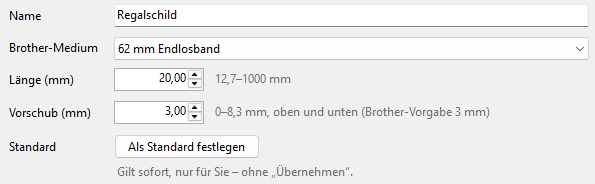
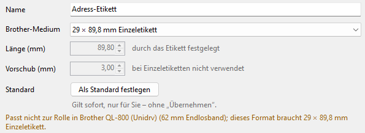

Standardformat und Testdruck
Beides gilt für den Drucker, der oben in der Leiste bei Drucker gewählt ist. Das Programm fragt außerdem die eingelegte Rolle ab und zeigt, welche Formate dazu passen (an USB und im Netzwerk; einen freigegebenen Drucker, wenn auf dem PC mit dem Drucker der Druckerstatus-Dienst läuft).
-
Standard-Etikettenformat
Wählen Sie ein Format und klicken Sie rechts auf Als Standard festlegen. Programme beginnen dann auf diesem Drucker mit diesem Papierformat. Das gilt sofort und nur für Sie, ohne Übernehmen. In der Liste steht Ihr Standardformat fett.

Dasselbe bietet das Menü Drucker und der Rechtsklick auf ein Format: „…“ als Standard-Etikettenformat verwenden.
-
Testdruck
Wählen Sie ein Format und klicken Sie auf Testdruck. Der Drucker druckt ein Musteretikett in diesem Format, so sehen Sie Größe und Lage.
Vorher fragt das Programm den Drucker nach der eingelegten Rolle. Passt sie nicht, sagt es das, bevor gedruckt wird: Der Drucker würde sonst mit „falsches Medium“ anhalten (rote LED). Mit Trotzdem drucken? entscheiden Sie selbst. Ist der Drucker in Windows auf „Drucker offline verwenden“ gestellt, erfahren Sie auch das vorher.
-
Graue Formate
Grau sind Formate, die nicht zur eingelegten Rolle passen, und Formate, die das Modell des Druckers nicht drucken kann. Rechts steht in Orange, warum. Bearbeiten lassen sich alle. Formate, die das Modell nicht drucken kann, lassen sich auf diesem Drucker weder testdrucken noch als Standard festlegen.

Wechseln Sie die Rolle, werden die Formate dazu wieder schwarz, sobald der Drucker sie meldet.